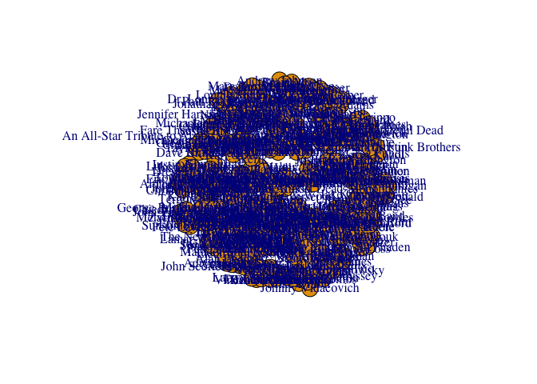
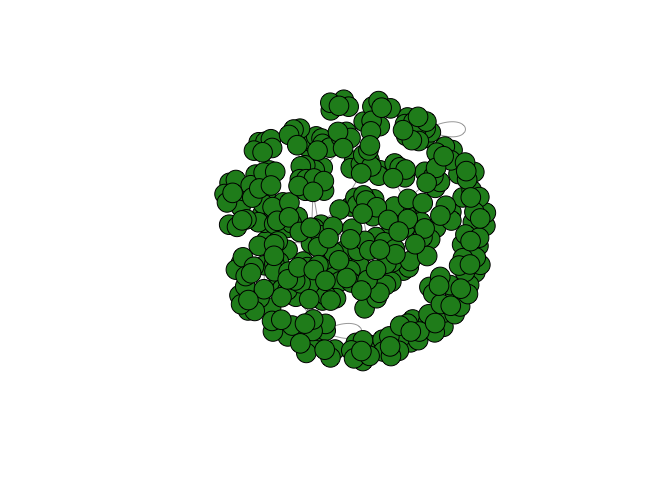
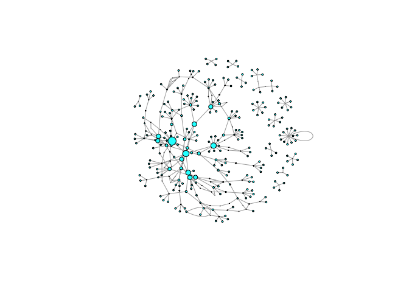
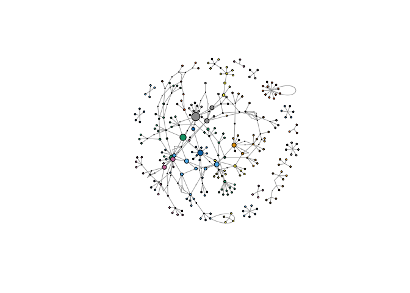

My favorite music is improvisational; seeing my favorite musicians push themselves into new territory in a one of a kind unique experience is one of the most exciting creative processes to bear witness to. The art of improvisation also tends to bring people together, which was the inspiration behind creating this network. I chose to teach myself network science using a topic I’m extremely familiar with; the jam band live music scene. I began documenting all the concerts I attend, noting the artists partaking in those bands.
This allowed me to learn Neo4J, and RNeo4J for the visualization of the network. Here I have visualized the artists I’ve seen, using the metric of betweeness to quantify the importance of artists and bands connecting other network nodes. Betweenness centrality takes every combination of node and measures the shortest path between them, counting how many times each node is used in the shortest path. Nodes are proportionately sized to reflect their betwenness centrality within the network.
I also used the Gervan-Newman algorithm which removes these highly important nodes to see which artists and bands belong to clusters. We can then look at these artists and ask questions like: are they clustering due to geography? Perhaps the New Orleans music scene is segregated from the New York scene. As Wikipedia puts it: Instead of trying to construct a measure that tells us which edges are the most central to communities, the Girvan–Newman algorithm focuses on edges that are most likely “between” communities.
Edges are also sized according to their weight. Here that is a metric of how many times we’ve seen that artist in the band. As a Phishhead, the edges of Phish are far thicker than any other relationship.
# library(RNeo4j)Connect your graph to the database
I’m using the default port. You can find this under Details in Neo4j Desktop. Make sure to use the HTTP port (7474)
graph <- startGraph("http://localhost:7474/db/data/")Pass the graph object to summary to get graph overview. This gives us all the combinations of node relationships and helps to familiarize ourselves with the data model.
# summary(graph)
## This To That
## 1 artist PLAYED_IN bandWe can write a query and using the cypher function perform that query on our graph. Nodes are written in perenthesis and connected by edges in brackets. The names of the nodes and edges come after colons. We can assign the nodes and edges labels to perform queries.
# a:artist = a is a label; artist is the name of the node
# here we say using the relationship of artists playing in bands
# how many times have we seen each artist
query = "
MATCH (a:artist)-[:PLAYED_IN]->(b:band)
RETURN a.name , COUNT(*) AS TimesPlayed
ORDER BY TimesPlayed DESC
LIMIT 10
"
cypher(graph, query)
## a.name TimesPlayed
## 1 Trey Anastasio 15
## 2 Mike Gordon 12
## 3 John Fishman 11
## 4 Page McConnell 11
## 5 George Porter Jr. 7
## 6 John Medeski 6
## 7 DJ Williams 5
## 8 Eddie Roberts 5
## 9 Shira Elias 5
## 10 Adam Deitch 5Now we can use igraph to create static visuals and perform lots of network metrics.
library(igraph)In order to use igraph we need to extract edgelists with cypher query. The visualization packages in R work with edgelists to create visualizations where node 1 and node 2 are in different columns, indicating there should be a relationship between 1 and 2.
In this specific graph query we will extract the times an artist is seen in a band and we can give the edges weights which are how many times we’ve seen that artist in that band.
query = "
MATCH (a:artist)-[r:PLAYED_IN]->(b:band)
RETURN a.name, b.name, COUNT(*) AS weight
ORDER BY weight DESC
"
edges = cypher(graph, query)
head(edges)
## a.name b.name weight
## 1 Trey Anastasio Phish 11
## 2 John Fishman Phish 11
## 3 Mike Gordon Phish 11
## 4 Page McConnell Phish 11
## 5 Scott Metzger Joe Russo's Almost Dead 3
## 6 Tommy Hamilton Joe Russo's Almost Dead 3Running this script we see we’ve seen Trey in Phish 11 times. Because this is my favorite band it makes sense I’ve seen them the most.
graph_from_data_frame takes this edgelist and we can then pass that to plot (with default settings)
ig = graph_from_data_frame(edges, directed = F)
plot(ig)
This visual is pretty gross, especially because it is a large network. We can remove labels to look at the general structure of our graph.
plot(ig, vertex.color = "forestgreen", vertex.label = NA, size = 1)
We can further improve on this by making the size of the nodes a function of some graph metric. Here we will explore betweenness: how often some node is on the shortest paths. Betweenness looks at every combination of nodes and calculates the shortest path between them; adding up how many times a node is on that shortest path. High betweennesss indicates bridges between clusters in the graph.
# we are sorting based on the top 5 nodes of betweenness
sort(betweenness(ig), decreasing = TRUE)[1:5]
## DJ Williams Shots Fired Eddie Roberts Everyone Orchestra
## 9282.675 7163.549 6277.136
## Foundation of Funk Skerik
## 5674.447 5404.948We can then use this in our visualization by changing the size of the vertices and scale so that it doesn’t take up the entire graph
plot(ig, vertex.color = "cyan", vertex.label = NA,
vertex.size = betweenness(ig)/(max(betweenness(ig)* 0.1)))
We also want to look at community detection algorithms. There are many different algorithms and here we are using the Gervin Newman algorithm which iteratively removes edges with high betweeenness centrality. What’s left without these major bridges is our clusters
clusters = cluster_edge_betweenness(ig)
clusters[1:3]
## $`1`
## [1] "Trey Anastasio"
## [2] "John Fishman"
## [3] "Mike Gordon"
## [4] "Page McConnell"
## [5] "Bill Kreutzmann"
## [6] "Mickey Heart"
## [7] "Phil Lesh"
## [8] "Jeff Chimenti"
## [9] "Bob Weir"
## [10] "Scott Murawski"
## [11] "John Kimock"
## [12] "Oteil Burbridge"
## [13] "Craig Myers"
## [14] "John Mayer"
## [15] "Phish"
## [16] "Fare Thee Well: Celebrating 50 Years of the Grateful Dead"
## [17] "Dead and Company"
## [18] "Mike Gordon Band"
## [19] "Trey Anastasio Solo"
##
## $`2`
## [1] "Scott Metzger"
## [2] "Tommy Hamilton"
## [3] "Dave Drewitz"
## [4] "Joe Russo"
## [5] "Marco Benevento"
## [6] "John Medeski"
## [7] "Scotty Zwang"
## [8] "Billy Martin"
## [9] "John Scofield"
## [10] "Adam Deitch"
## [11] "Steve Lyons"
## [12] "Skerik"
## [13] "Chris Wood"
## [14] "Raina Mullen"
## [15] "Borahm Lee"
## [16] "Jesus Coomes"
## [17] "Vincente Archer"
## [18] "Cyrll Nevil"
## [19] "Bill Stewart"
## [20] "Nigel Hall"
## [21] "Holly Bowling"
## [22] "Ryan Zoidis"
## [23] "Benny Bloom"
## [24] "Erik Deutsch"
## [25] "Ghostface Killah"
## [26] "DJ Logic"
## [27] "Larry Goldings"
## [28] "Joe Russo's Almost Dead"
## [29] "Worship My Organ"
## [30] "Ghost Light"
## [31] "Medeski, Martin, Scofield & Wood"
## [32] "Lettuce"
## [33] "Medeski, Martin & Wood"
## [34] "Adam Deitch Quartet"
## [35] "John Scofield's Country For Old Men"
## [36] "DRKWAV"
##
## $`3`
## [1] "DJ Williams" "Zigaboo Modeliste" "Deshawn Alexander"
## [4] "Eddie Roberts" "Eric Krasno" "Joe Tatton"
## [7] "Kevin Scott" "Pete Shand" "Marcus King"
## [10] "Simon Allen" "Lamar Williams Jr." "Chris Spies"
## [13] "Duane Trucks" "Kimberly Dawson" "Adryon de Leon"
## [16] "Alan Evans" "Foundation of Funk" "The Cleaners"
## [19] "Matador Soul Sounds" "The New Mastersounds"We can see some structure to these clusters; Phish and Dead and Company is seprate from the local shows I’ve seen in Colorado in cluster 3. We can use these clusters to color our graph coloring the verteces by their clusters.
plot(ig, vertex.color = clusters$membership, vertex.label = NA,
vertex.size = betweenness(ig)/(max(betweenness(ig)* 0.1)))
We can make this same graph dynamic using networkD3; a package which uses beautiful D3 visuals in R.
library(networkD3)We have an edge dataframe but we also need a node dataframe for this package. It’s easy enough to extract this, pulling out the unique names of all our nodes from the edgeist.
nodes = data.frame(name = unique(c(edges$a.name, edges$b.name)))
head(nodes)
## name
## 1 Trey Anastasio
## 2 John Fishman
## 3 Mike Gordon
## 4 Page McConnell
## 5 Scott Metzger
## 6 Tommy HamiltonWe also need the edgelist to point to the name of the node we index the position of the node, getting the name of the from and to nodes and setting them as the source and target. We need to write a loop because although R starts counting at 1, we need to begin here with the first node at 0.
for(i in 1:nrow(edges)) {
from = edges$a.name[i]
to = edges$b.name[i]
edges$source[i] = which(nodes$name == from)
edges$target[i] = which(nodes$name == to)
}
edges$source = edges$source - 1
edges$target = edges$target - 1
nodes$group = clusters$membership
nodes$Nodesize = betweenness(ig)/10Using the edges, nodes and source and functions set above, we can include more functions for customization. We can set the name so when we scroll over that node we see a name different from the id, we can color our nodes by their cluster, change the font size, and linkWidth to mirror the weight (obviously Phish is the thickest).
forceNetwork(edges, nodes, Source = "source", Target = "target",
NodeID = "name", Group = "group", Nodesize = "Nodesize",
linkWidth = edges$weight, zoom = FALSE, fontSize = 50, opacity = 0.8,
charge = -5)And there you have it! My first foray into graph metrics.
As an aside, you can save your network using the saveNetwork function which includes all the html code needed to imbed your graph into a webpage such as I have here. I’ve included the html file within an <iframe> tag which allows for the imbedding of a webpage within a webpage